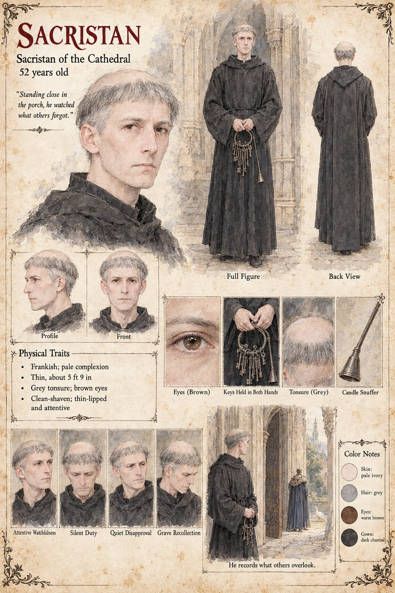

Sacristan
Sacristan of the cathedral · unnamed · 52 years old by his sheet
The sacristan of the cathedral: Frankish, pale, thin, with a grey tonsure and brown eyes, who holds a great ring of keys in both hands and has a bell-shaped candle-snuffer among his tools. His sheet's line is Standing close in the porch, he watched what others forgot, and its caption is He records what others overlook; the scene draws him in the cathedral porch beside the open door while a figure in a blue fur-collared cloak crosses the green beyond, a white goose near him. The sheet does not name that figure, and the white goose is presumably Prior, who follows the Guildmaster to the cathedral. The cathedral's porch is where, on the Duke's Pages's page, the Duke of Tarnwald, Waldo, stands through the Ordeal behind the two pages who hold the west doors; the publication notes give what the Sacristan records there, that the Duke never took his eyes from the open door (Chapter 13), and, of the Guildhall yard, that the Guildmaster's weeping over his goose scandalized the whole yard. The cathedral's other servant on file is the Sexton, who has a sheet of his own at fifty-seven, and this page does not join the two.
His expression panels run Attentive Watchfulness, Silent Duty, Quiet Disapproval and Grave Recollection; his pull-quote is the sheet's own line. Written from the sheet, from what the other Case 4181 pages already say, and from the character notes in the case's publication-prep file; the manuscript itself was not to hand. His age of 52, Frankish origin, pale complexion, thin build of about 5 ft 9 in, grey tonsure, clean-shaven thin-lipped face and dark charcoal gown are the sheet's own.
“Standing close in the porch, he watched what others forgot.”